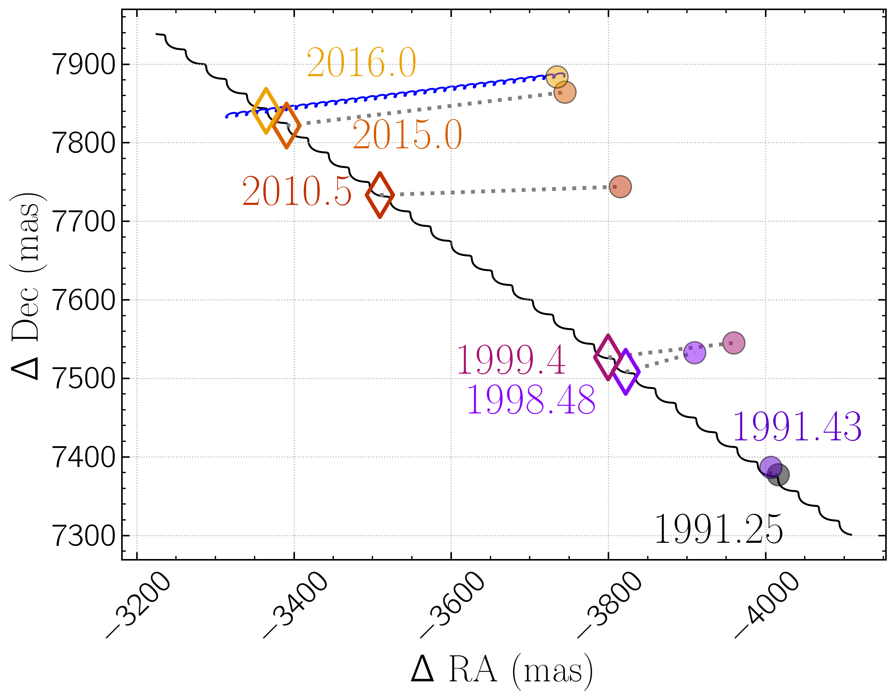

Advisor: Jared Males, University of Arizona
In Pearce et al. 2022 we detected a candidate companion signal at ~2 lambda/D that we thought could be near the stellar/substellar boundary. In April 2022 we followed up with MagAO-X and determined it is a mid-M dawrf star. These systems aren't particularly rare or interesting, but it is the first astrophysics paper from MagAO-X and showed we can find reliable signals at 2 lambda/D, which is incredibly difficult, but aided by secondary companion indications like acceleration and overluminosity.
This image shows the newly discovered stellar companion, HIP 67506 C, marked with the white crosses, with the much brighter HIP 67056 A in the center.
We also showed in this paper that the previously identified wide (9 arcsec) companion HIP 67506 B is actually not gravitationally bound and is a much further distant star. This plot shows the observed position of HIP 67506 B relative to A (circle), the predicted position if B were a non-moving background object (black track and diamonds), and the track B would follow if it were moving with the proper motion given by the Gaia DR3 solution (blue track). The observed position of B follows the blue track precisely, indicating that the order-of-magnitude futher distance for B and A given by Gaia is correct.
